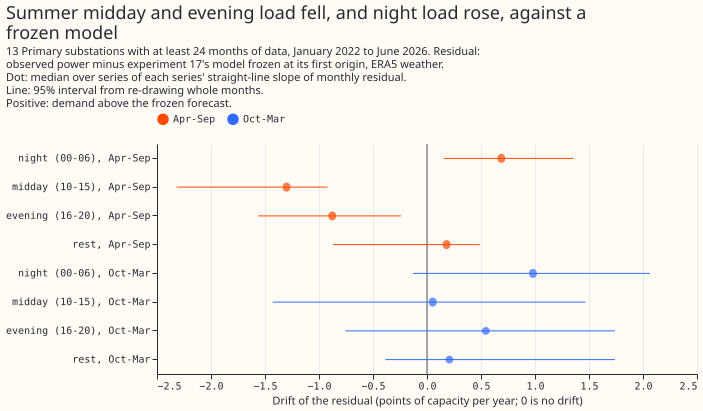
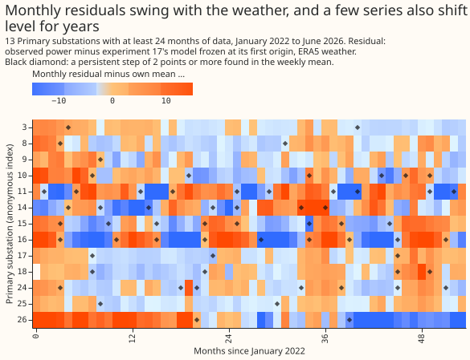
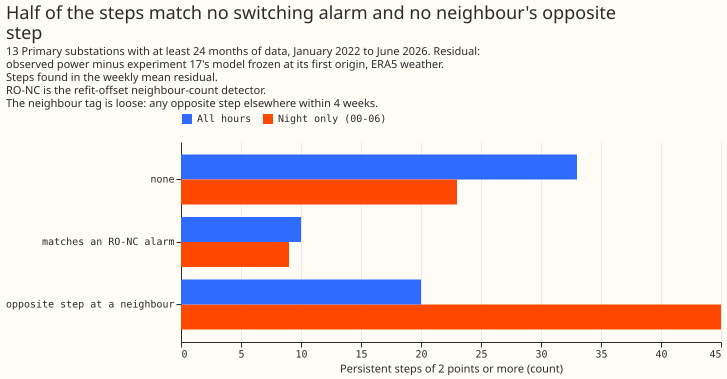
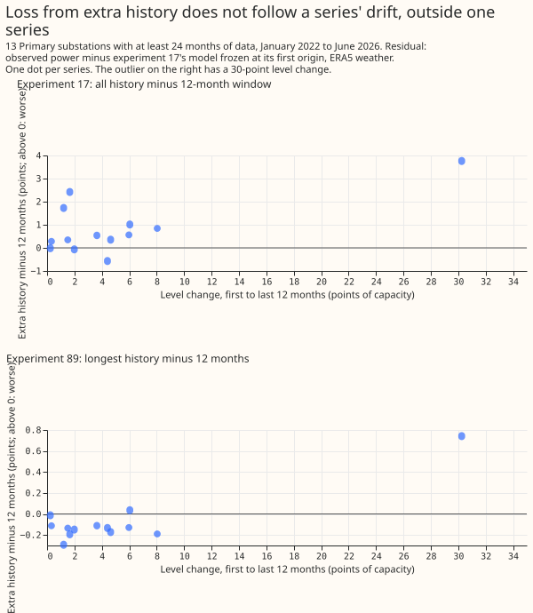
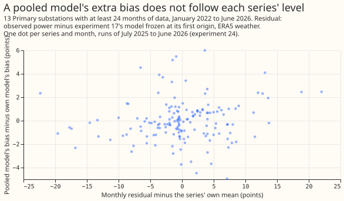
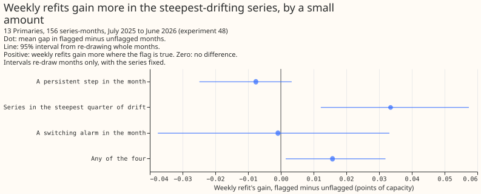

Experiment 92: how has Primary demand drifted since 2022? (LV0)
The demand of Primary substations has drifted since 2022, differently in each substation, but a
plain level shift does not explain why longer training history or pooled XGBoost models score
worse. In this page, "drift" means the trend over time of the residual: observed power minus the
forecast of a model that was frozen in 2022. The experiment is LV0, the first of three planned on a
slower per-series level term: LV1 is the level-normalised long-history experiment, and AGE1 asks
whether an old training year still hurts once its level is removed. The result narrows the plan for
LV1. An explicit solar term, such as the am solar offset, is the likeliest carrier of the drift.
AGE1 should run first. The pre-registered prediction was not met on one of its two measures, so the
verdict is inconclusive.
We took the stored forecasts of six earlier experiments (17, 24, 48, 78, 82, and 89), which hold each Primary substation's forecast beside its observed power. We measured the residual by hour of day, by season, and by month, in percentage points of the substation's effective capacity ("points" below). We then asked whether the drift in that residual explains three results of those experiments: longer training history scoring worse (D4), pooled models scoring worse than per-series models (D5), and weekly refits scoring a little better than monthly refits (D6). D1 to D3 describe the drift itself. No model was fitted.
Figure 1 (headline): the drift by hour band and season, in points a year.

Figure 2: each series' monthly residual, with the persistent steps found.

Figure 3: the persistent steps, by what each matches.

Figure 4: the loss from extra history against each series' level change.

Figure 5: the pooled models' extra bias against each series' monthly level.

Figure 6: the gain from weekly over monthly refits, by drift flag.

Findings
- Predictions and schedules used. The residual is observed power minus experiment 17's XGBoost model frozen at its first forecast origin and fed ERA5 weather, in points of capacity. D4 also reads experiment 17's all-history and 12-month-window arms (monthly refits) and experiment 89's reference and longest-history arms (monthly refits). D5 reads experiment 24's per-series and pooled models. D6 reads experiment 48's weekly and monthly refits at the full setting. Experiment 78 supplies the solar capacity flag for 5 series only. Experiment 82 supplies the switching alarms. Experiment 81 was not used because it has no weekly arm, and experiment 87 because its predictions have no observed-power column.
- Series. Experiment 17 holds 16 series. Three have under 24 months of data (4, 5, and 22 months) and are dropped, leaving 13.
- D1, drift by hour band. The pooled all-hours slope is +0.04 points a year (-0.90 to +0.89), because the series drift in both directions. In 12 of 13 series some band moves by at least 1 point a year, and in 5 of 13 the all-hours slope does. April-to-September midday is -1.30 (-2.32 to -0.92), evening is -0.88 (-1.57 to -0.24), and night is +0.69 (+0.15 to +1.36). The October-to-March bands span zero. The midday fall may reflect growing embedded solar output; this is untested.
- D1, share of drift that is a common level. By a straight-line fit, the all-hours component holds over half of the trend variance in 6 of 13 series (95% interval 6 to 11). By a 12-month rolling mean, which also captures steps, it holds over half in 12 of 13. The prediction of at least 10 of 16 holds on the second measure and fails on the first, so the experiment cannot say the prediction held. The threshold of 10 was set for 16 series, and 13 remain.
- D2, step census. A step is a change of at least 2 points in the weekly mean residual lasting at least 8 weeks. The search finds 63 steps over all hours (33 with no other event nearby, 20 with an opposite step at another series within 4 weeks, 10 within 2 weeks of an alarm of the refit-offset neighbour-count detector, "RO-NC"). The penalty was set so that shuffled weekly values gave 0.39 steps per 5 years. Caveat: the frozen model's seasonal misfit also produces persistent changes, so 63 is an upper bound, and the median step is 14 points. At night only, where solar does not enter, the search finds 77 steps (23 untagged).
- D3, common against own drift. The first principal component of the monthly level holds 39% of the variance (95% interval 34% to 48%), and the median correlation between two series is 0.25 (0.15 to 0.34). Drift is mostly specific to each series. That is consistent with pooled models struggling without a per-series level, but D5 finds the pooling gap does not follow level.
- D4, loss from extra history. In experiment 17, all history scored 0.86 points worse than a 12-month window. The loss tracks each series' level change at r = 0.70 (interval -0.34 to +0.98), but one series with a 30-point level change carries the correlation: without it r = -0.03 and the rank correlation is 0.27. Experiment 89's longest-history arm scored 0.07 points better on average, and its correlation with level change is 0.91 with that series and 0.08 without. No link is detectable in the other 12 series (n = 12, no interval computed), and the removed series has both the largest level change and the largest loss.
- D5, pooling gap. Experiment 24's XGBoost model pooled over all series, with the series identifier as a feature, scored 0.40 points worse than per-series models (0.51 after the 14-day correction). The pooled models' extra monthly bias correlates with the series' monthly level at r = 0.13 (-0.04 to +0.33), so no link to level is detected, though a correlation up to 0.33 is not excluded.
- D6, cadence gap. Weekly refits scored 0.017 points of capacity better than monthly refits over the 156 series-months, in mean pinball loss over nine quantile levels. The gap is larger in the 3 series with the steepest all-hours slope (+0.033, 0.012 to 0.057 more than elsewhere), and not larger in months with a step (-0.008, -0.025 to +0.003) or a switching alarm (-0.001). The capacity-growth flag cannot be tested, because all 5 series with a capacity record grew by over 5%. Any flag holds 83% of the gap in 60% of the series-months, so the prediction's "over half" is met, but the excess comes entirely from the 3 series chosen by slope: the step, alarm, and capacity flags hold no more of the gap than their share of series-months.
- Tails, weekly and monthly refits on the same 13 series. The table is the stored forecasts of experiment 48. The stored forecasts stop at q05 and q95, so q01 and q99 are not available. Both tails are too narrow: q05 covers 0.07 of the actuals against 0.05 nominal, and q95 covers 0.91 against 0.95. A curtailment-cost score does not apply because no new forecast was made.
| Refit | q05 coverage | q05 pinball | q95 coverage | q95 pinball |
|---|---|---|---|---|
| Weekly | 0.071 | 0.834 | 0.913 | 1.025 |
| Monthly | 0.070 | 0.834 | 0.912 | 1.038 |
Lessons and next experiment
- Verdict. Inconclusive: the two measures of the common-level share disagree, and the D6 prediction is met only against a high base rate.
- LV1. The decision rule to proceed to LV1 is met by D1 (5 of 13 series at 1 point a year or more overall), but D4 and D5 do not support level removal as the mechanism, so AGE1 should run first.
- AGE1 should run first. AGE1 tests directly whether an old year still hurts after its level is removed.
- Intervals. Every interval re-draws whole months with the series held fixed, so the intervals leave out the uncertainty between series, which is large with 13 series, and are too narrow. The threshold of 10 of 16 series scales to about 8 of 13; the straight-line count (6, interval 6 to 11) lies at the bottom of its interval.
- Caveat on every diagnostic. The residual comes from a frozen model on ERA5 weather, so the results describe drift in a lab setting, not in the live service.
- What the next experiment should answer. Whether a frozen model's seasonal misfit hides real steps. A later experiment on steps could first remove the seasonal pattern before searching for them.